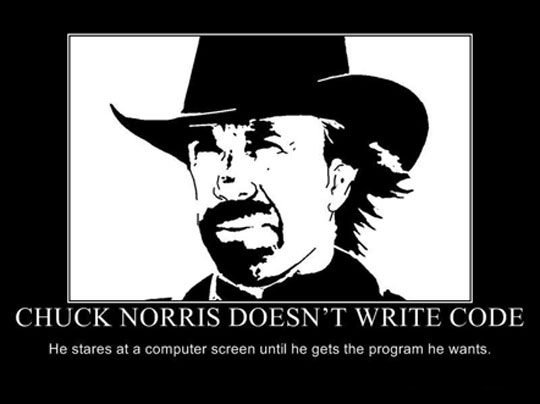
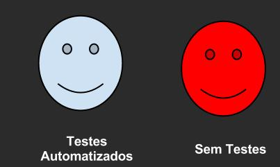

Profissão Testador
Testar ou não Testar - eis a questão
Operação médica
Testes Automatizados
Just do it!
Heads Up
Embrace your stupidity
Not cool
whoami


TDD - The BuzzWord

What is?
Vantagens
- Evita escrever código desnecessário;
- Baixo acoplamento - Alta coesão;
- Feedback rápido;
- Regressão;
- Influência sobre o design da aplicação.
Test-First programming is not a testing techniqueCunningham, Ward
public class ContaController(){
public void adiciona(Conta conta){
DAOFactory().getContaDAO().adiciona(conta);
EnviadorDeEmail.enviar(conta.getTitular().getEmail());
}
}
mas isso você já sabe...
Talvez, o que você não saiba...
Desvantagens*
- Não resolve todos os meus problemas;
- Prática difícil - skill;
- Influência sobre o design*.
...By the time the project was canceled, enough other projects had replicated C3's early success to continue XP's development. C3's cancellation, however, also proves that XP is no guarantee of success...Fowler, Martin
Iremos arder no mármore do inferno ágil
Resumindo
- Testes de métodos privados? - spy's;
- Olhe para suas asserções;
- Olhe para o seu cenário inicial;
- Olhe para o nome do seu método;
- TDD é uma ferramenta que aponta erros.
It's always your fault
Por que estou aqui?
Testes automatizados
Quem deveria fazê-los?
Programador! É claro!*
Pq vc não faz?
...Uso JavaEE - não sei isolar classes do contexto...
...Só faço CRUD...
...Entedo os ganhos, mas não tenho a manha...
...Irá atrasar a entrega do projeto....
...Custo alto! Meu progamador fará mais código...
Nossa área
| Teórico | Prático | Acadêmico |
|  |
Legacy code
Ok... eu vou!
give up...
pensando...
...You should think of it as walking a tightrope without a net. If you are good at walking a tightrope, and it's not that high up, then you might try it. But if you've never walked a tightrope before, and it's over Niagara Falls, you probably want a good net...Fowler, Martin
but you can try...
Custos

...Há uma grande sinergia entre testabilidade e um bom design..Feathers, Michael
Produtividade
Como medir produtividade?
Linhas de código?
Quem entrega mais rápido?
Horário de saída?
Quem faz mais build?
Quem faz mais commits?
A Tale of two cities
Produtividade
MECÂNICO
Voltando....
6 meses depois....
Nova funcionalidade...
Tendência de programador
Aniche's Time - Indústria
- Microsoft e IBM - produtos com 40-90% com menos defeitos
- 92 a 98% de cobertura
- 87% acreditou que TDD facilitou o entendimento dos requisitos
- Redução de 40-50% na quantidade de bugs
- 78% acreditou que aumentou a produtividade
- 92% acreditou que aumentou a qualidade do código
- 79% acreditou que TDD provê indicativos para design simples
- Aumentou o tempo inicial do desenvolvimento em 15% a 35%
e tem mais...
- Menos tempo debugando
- Complexidade menor e quantidade de cobertura maior
- Bugs quando encontrados eram corrigidos em um tempo menor
- ...e quando corrigidos gerava menos novos bugs
Aniche's TIme - Academia
- 24 estudos na graduação informando que aumentou a produtividade
- ... porém nenhuma diferença na qualidade de código
- 3 grupos diferentes de alunos - TDD/Last/Without
- Codigo TDD mais O.O
- Team TDD entregou mais features
- 2x mais asserções e cobriu 86% mais branches
- Valores de acoplamento 104% menor que o Team sem testes
- Métodos 43% menos complexos
- 59 estudantes, código com TDD tem 45% menos bugs
100% de cobertura
...If you make a certain level of coverage a target, people will try to attain it. The trouble is that high coverage numbers are too easy to reach with low quality testing...
int maior(Integer a, Integer b){
if(a > b){
return a;
}
else{
return b;
}
}
EclEmma

Categorias
Unidade
O que testar?
Vantagens?
Ferramentas?

class Faturamento{
public Faturamento(EnviadorDeMensagem enviador){
}
public void faturar(OrdemDeCompra ordemDeCompra){
if(ordemDeCompra.getData().after("12/10/2010")){
ordemDeCompra.descontar(10);
enviador.enviar("Faturada com sucesso");
}else{
enviador.enviar("Ordem de compra irregular");
}
}
}
class FaturamentoTest{
@Test
public void quandoFaturarComDataInviavel(){
OrdemDeCompra ordem = new OrdemDeCompra("12/09/09");
faturamento.faturar(ordem);
verify(enviador).enviar("Ordem de compra irregular");
}
@Test
public void quandoFaturarComDataViavel(){
OrdemDeCompra ordem = new OrdemDeCompra(100);
faturamento.faturar(ordem);
assertEquals(90, ordem.getValor());
verify(enviador).enviar("Faturada com sucesso");
}
//se a ordem de compra fosse null?
//se a data fosse null?
//e se a data for no mesmo dia 12/10/2010?
}
Integracao
O que testar?Vantagens?
Ferramentas?

Polêmica Bill Burke
...Test in the real environment and get results that are truly valid. Stop kidding yourself with mocks...
my two cents
well, maybe, some day, because of the facilities that tools like Arquillian bring to the tests, they are going to be useless… BUT, i don’t see how they help on the application design… because it’s has already a container started and gives you all the dependencies, even if your object are to coupled or doing so much stuff that it wasn’t supposed to do.Lacerda, Raphael
Sistema
O que testar?
Vantagens?
Ferramentas?

@Test
public void quandoUsuarioBuscarPorFuncionarioValido1()
{
WebElement chave = driver.findElement(By.id("formFuncionario:chave"));
chave.sendKeys("F8437296");
WebElement pesquisar = driver.findElement(By.id("formFuncionario:pesquisar"));
pesquisar.click();
WebElement funcionario = (new WebDriverWait(driver, 120)).until(ExpectedConditions.visibilityOfElementLocated(By
.id("textDadosFuncionarios")));
assertNotNull(funcionario);
}
Not Anymore
@Test
public void quandoUsuarioPesquisarClienteValidoUsandoCodigoMCIAcessandoPeloMenuGAW()
{
driver.navigate().to("localhost:8443.bb.com.br/gaw/APPS");
(new WebDriverWait(driver, 120)).until(ExpectedConditions.visibilityOfElementLocated(By.id("atalhosAplicativos")));
WebElement botao = driver.findElement(By.id("0"));
botao.click();
(new WebDriverWait(driver, 3000)).until(new Function() {
public Boolean apply(WebDriver arg0)
{
for (WebElement webElement : driver.findElements(By.tagName("iframe")))
{
if (webElement.getAttribute("src").trim().equals("/coc/APPS/pesquisaCLiente"))
{
frame = webElement;
return true;
}
}
return false;
}
});
driver.switchTo().frame(frame);
WebElement campo1 = driver.findElement(By.id("frm:agenciaOpt1Txt"));
campo1.clear();
WebElement campo2 = driver.findElement(By.id("frm:Codigo"));
campo2.sendKeys("17");
WebElement campo3 = driver.findElement(By.id("frm:Pesquisa"));
campo3.click();